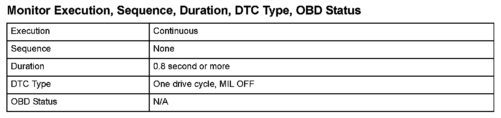

Advanced Diagnostics
DTC P0615: Starter Cut Relay STRLD Circuit MalfunctionGeneral Description
A starter switch inhibit system prevents the starter from working during engine rotation to prevent damage to the starter pinion gear.
If the ignition switch is switched to START (III) position mistakenly while the engine is running, the powertrain control module (PCM) prevents the starter from working according to the engine rotation information and the output (STRLY) signal of the starter cut relay is switched to LOW.
In this system, two starter cut relays are connected in series (starter cut relay 1, starter cut relay 2) to prevent the starter cut relay to continue rotation by the ON malfunction of the starter.
Also a diagnosis line (STRLD) is used to monitor voltage in the middle of starter cut relay 1 and starter cut relay 2. The PCM detects an OPEN malfunction an ON malfunction of starter cut relay 1, and an ON malfunction of starter cut relay 2, according to the information.
If the voltage of the diagnosis line (STRLD) input does not exceed upper and lower limit for a specified duration when the ignition switch is at the START (III) position and the output of the starter cut relay (STRLY) is HIGH (starter ON), an OPEN malfunction of the diagnosis line is detected.

Monitor Execution, Sequence, Duration, DTC Type, OBD Status

Enable Conditions
Malfunction Threshold
The diagnosis line (STRLD) input voltage is between 2.4 V to 2.6 V for at least 0.8 second.
Diagnosis Details
Conditions for illuminating the indicator
When a malfunction is detected, the DTC and the freeze frame data are stored in the PCM memory. The MIL does not come on.
Conditions for clearing the DTC
The DTC and the freeze frame data can be cleared by using the scan tool Clear command or by disconnecting the battery.